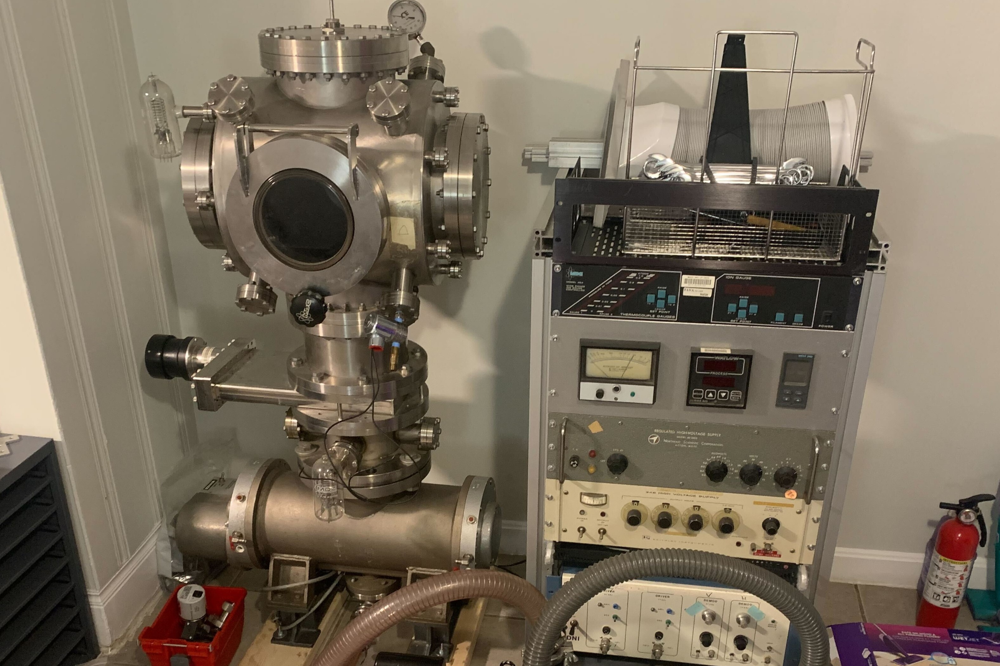
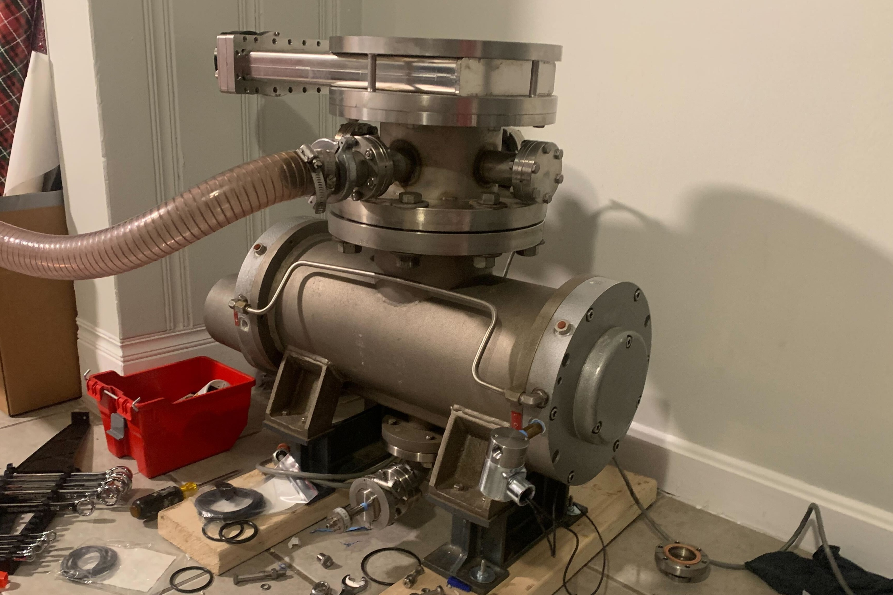
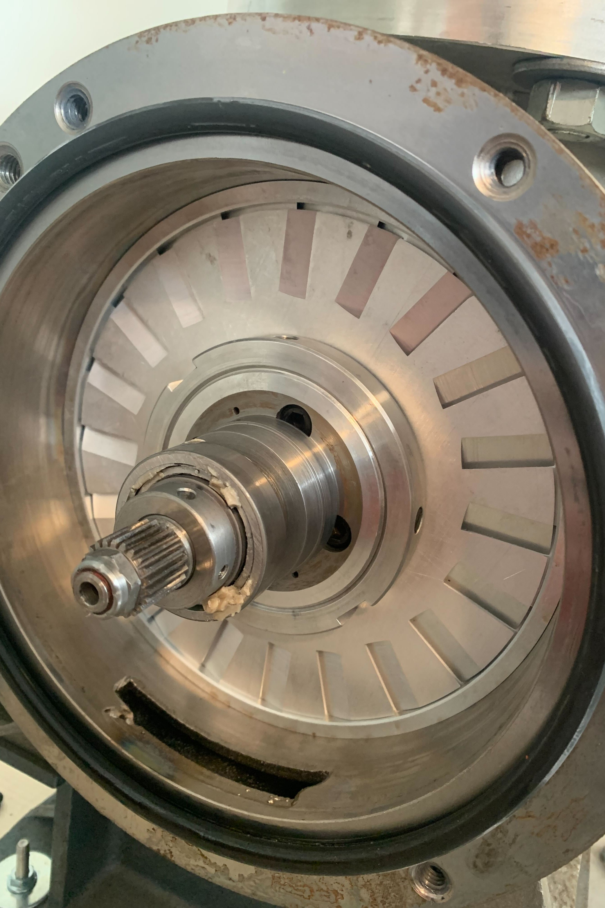

High Vacuum Shenanigans
Putting nothing in a chamber

I acquired this ultra-high vacuum chamber from a lab at MIT that was disposing of it. It is a quite heavy chamber, mostly large conflat flanges. I kept it separated for a long time, because I was in a third-floor Boston apartment and I didn't believe the floor could handle the weight of the full chamber. Eventually I moved into a house where I had claim to the basement, and then I was able to finally assemble the chamber. It took a while to get leaks dealt with, but with a good amount of vacuum grease and some disassembly of the turbopump, I was eventually able to get a working chamber. Ultimate pressure seems to be about 10e-5 bar.
The turbopump was a special challenge; it is an uncommon twin-spool horizontal design, that I believe dates to the 50s. The rotor is oriented perpendicular to the inlet, with the incoming flow needing to split and turn 90degrees each way, then proceeds outwards, wraps around through a duct slung under the bottom of the pump, and then out the port on the bottom. Considering it predates modern electronics, it was designed to run without a controller. It's powered by a 220V three-phase induction motor that is then geared up roughly 7:1 to the turbo rotor itself (with straight-cut spur gears!). Its intended to be just directly plugged into 220V mains, but that seems spooky to me (It's also supposed to be water cooled, which I haven't been doing for now), so I instead got a cheap VFD and used a 110-220V transformer I had laying around and used that to gently accelerate the turbo over several minutes, keeping the power draw under 5A, to make sure I don't burn up such an irreplacable setup. After a lot of anxiety, I did eventually get it running well (albiet loudly).

The turbomolecular pump and the lower part of the chamber. The roughing pump line is connected to the wrong side of the turbo because I was diagnosing some issues.

The end of the turbopump housing removed, showing the final-stage blades. Note the pinion gear that the rotor is driven by. I was amazed the designers chose a straight-cut spur gear for a 20k RPM application.
The vacuum chamber enables various processing techniques that I'd love to try, mostly focusing on vapor deposition of thin films. Currently I've started work on making a magnetron sputtering setup, and have also been learning about RF electronics to work towards generating inductively coupled plasmas.